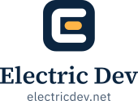
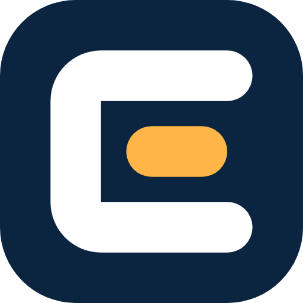
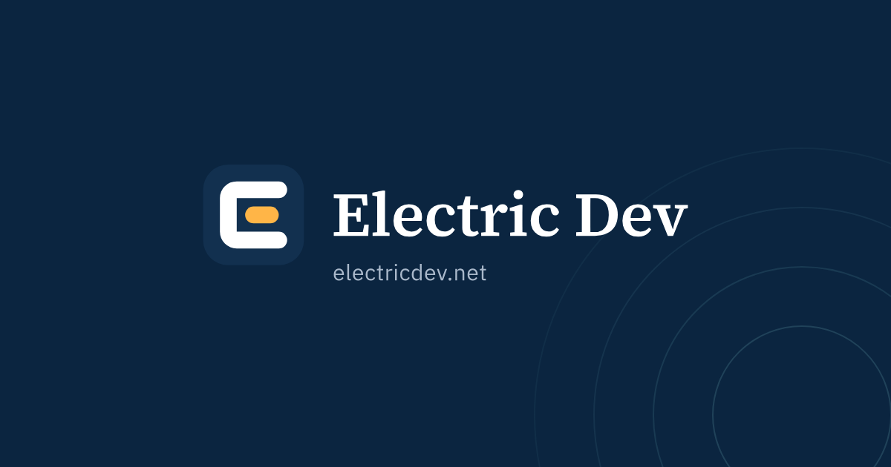

Logo and branding
The log bracket
A navy tile with a bracket that reads as an E, and one amber line inside it. It's built from the Pacific Current style guide: deep water, white, and Beacon amber as a fill. Electric Dev is a working name, so the wordmark is generated from the style guide's fonts and can be rebuilt in a minute if the name changes.

The bracket is the machine. Three strokes and a spine give an E, and the open side reads like a code bracket or a line of a log. It's square and heavy, so it holds up at 16 pixels.
The amber pill is the beacon. In the style guide amber marks live status and the moment a person steps in. In the mark it's the one line that's lit: the fix that's happening now. It's always a fill, never text, which matches the amber rule.
The tile is deep water. It gives amber the 8.8:1 contrast it needs, so the full-color mark works on any light page without a second version.
Concepts
Three directions, one recommended
All three are hand-drawn SVG on the same 48-unit tile so they can be compared at the same size.
B. Log bracket Recommended
Reads as an E, ties to the fix log, and uses amber the way the style guide does. Clearest at favicon size.
A. Signal line
A current that ends in a status light. Friendly, but it doesn't carry the name, and the thin line blurs below 24 pixels.
C. Beacon rings
Tide rings around a beacon. Pretty, but it reads as a Wi-Fi or RSS icon, which is a bad look for an IT company.
The rest of this page uses concept B.
Lockups
Mark and wordmark
The wordmark is Source Serif 4 at 600, the style guide's heading face, tracked −0.01em like the headings. Its caps are centered on the tile.
Primary, horizontal. Site header, documents, email signatures. svg/lockup.svg

Stacked, with the domain. Square spaces, slide covers, proposals. The domain is Plex Sans 400 in slate. svg/lockup-stacked.svg
Wordmark alone. Where the mark already appears nearby, such as a favicon next to a title. svg/wordmark.svg
Domain. Plex Sans 600 with .net at 400 in Current teal. For merch, slides and print where people need to type the address. svg/domain.svg
Serif or sans for the wordmark
Recommended Source Serif 4. Matches the site's headings and reads as established, which is the job the serif does in the style guide.
IBM Plex Sans 600. Plainer and more technical. Kept as an option: svg/lockup-sans.svg
Color
Versions for every background
The tile goes on light backgrounds. On deep water the tile would disappear, so the mark drops it and keeps the white bracket and amber pill.
Full color on Mist or White. lockup.svg
Reverse on Deep water: footer, fix log bands, social cards. lockup-reverse.svg
One color, navy. Fax, stamps, embossing, single-ink print. lockup-navy.svg
One color, white. Photos and any dark color amber can't sit on. lockup-white.svg

Stacked reverse. Domain in Fog. lockup-stacked-reverse.svg
Tile on deep water, when it must stay a tile (app icons in a dark list): Deep water 2 with a Channel edge. mark-tile-raised.svg
Brand colors
Only these appear in the logo. All are from the style guide.
Deep water#0B2540Tile, wordmark
White#FFFFFFBracket
Beacon#FFB547The pill, fill only
Current#00707A.net in the domain mark
Slate#475A70Domain on light
Fog#A9B8CADomain on deep water
Construction
Grid, clear space and minimum sizes
- Grid
- 48 by 48 units, tile corner radius 12.
- Bracket
- Strokes 8 units thick, outer corners radius 8, round ends. Spans 8 to 40 on both axes.
- Pill
- 16 by 8 units, starting 4 units past the spine.
- Clear space
- 8 units (one stroke) on every side of the tile. For the horizontal lockup, the same space measured from the tile's height: one sixth of it.
- Minimum
- Tile 16px on screen, 6mm in print. Horizontal lockup 24px tall, 10mm in print. Below that, use the tile alone.
- Wordmark
- Source Serif 4, 600, −0.01em, converted to outlines. Cap height centered on the tile.
Shown at actual pixel size, no smoothing, so you see what a browser tab shows.
Icons and social
Favicon, app icons and the share card
Favicon in a browser tab. svg/favicon.svg, with png/favicon.ico (16, 32, 48) as the fallback.

png/apple-touch-icon.png (180, full bleed, iOS rounds it) and png/icon-512.png for the web manifest.

Share card, 1200 by 630, with tide rings from the mood board. No tagline yet. png/og-image.png, source svg/og-image.svg
In context
Header and footer
The lockup at 32px tall in a white header, and the reverse lockup in a deep water footer. Link labels are placeholders.
Rules
Using the mark
Use the tile on light backgrounds.
Drop the tile on deep water and keep the amber pill.
Put a bare amber pill on a light page. Amber on Mist is 1.65:1, so the pill fades. Use the tile.
Recolor the pill. It's always Beacon amber, or the single ink color in one-color versions.
Stretch, rotate, outline or add shadows and gradients.
Set the name in mono. Mono means the machine is talking, and the logo is the company.
If the name changes
Rebuilding the wordmark
The mark is an E, so it suits any name that starts with E. For a name that doesn't, the tile, the bracket strokes and the amber pill stay the system, and the letter gets redrawn on the same grid. Concept A doesn't depend on a letter at all.
The wordmark is generated. Change NAME and DOMAIN at the top of build.py, then run the three steps in README.md: build, optimize with SVGO, export PNGs.
Tagline None yet. When there's approved copy, it goes under the stacked lockup in Plex Sans 400, Slate, at the domain's size.
Files
What's in design/brand
| File | Use |
|---|---|
svg/lockup.svg | Primary horizontal lockup, full color, light backgrounds |
svg/lockup-reverse.svg | Horizontal on deep water |
svg/lockup-navy.svg, svg/lockup-white.svg | One-color versions |
svg/lockup-stacked.svg, svg/lockup-stacked-reverse.svg | Stacked with the domain |
svg/lockup-sans.svg | Alternate with a Plex Sans wordmark |
svg/wordmark.svg, svg/domain.svg | Wordmark alone, domain mark |
svg/mark-tile.svg | The mark, full color |
svg/mark-reverse.svg, svg/mark-navy.svg, svg/mark-white.svg, svg/mark-tile-raised.svg | Mark without tile (deep water, one color) and the raised tile |
svg/favicon.svg, png/favicon.ico, png/favicon-16/32/48.png | Favicons |
png/apple-touch-icon.png, png/icon-512.png | Home screen and manifest icons |
svg/og-image.svg, png/og-image.png | Social share card |
png/lockup-1200.png | Raster lockup for tools that won't take SVG |
svg/concept-a-signal.svg, svg/concept-c-rings.svg | The two concepts not chosen, for reference |
build.py, svgo.config.mjs, export-png.js | Build, optimize and export |